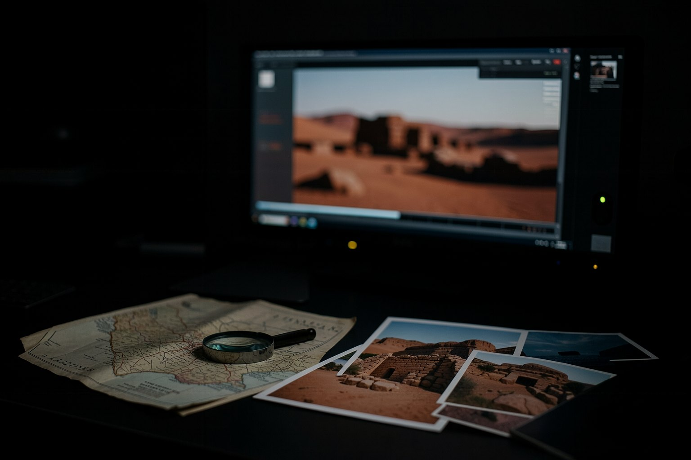

E1 · O docflow lido
5 minRode o bloco "ler o docflow".
Pronto quando: A saída mostra 0.8.0, documentario e slug: egito-antigo com duracao_total: 60.
Aula 4 · 16 min
Dois motores partem de lugares diferentes. O docflow parte de um tema e entrega um documentário curto narrado. O refazvideo parte de um vídeo de referência e entrega a sua versão em português, com tese e roteiro seus. Nos dois, o arquivo que o agente escreve é conferido antes de qualquer geração.
Começar a aula
Objetivo: ler o tema de um documentário do docflow e validar o roteiro visual de um refazvideo antes de qualquer geração.
Clique em cada etapa. As marcadas como pagas ficam fora da prática.
docflow 0.8.0 (commit f1ed75e) e refazvideo 1.4.1 (commit e1f369e), lidos em 19/10/2026.
Versão, estilos e o tema do vídeo modelo. Só comandos locais.
E=${TMPDIR:-/tmp}/ensaio-fabrica/a4; rm -rf "$E"; mkdir -p "$E"; cd "$E"
git clone -q https://github.com/inematds/docflow.git && cd docflow && git checkout -q f1ed75e
./docflow --version
./docflow estilos | head -4
grep -E "^(slug|estilo|duracao_total|duracao_cena|formato|motor|voz):" temas/egito.yaml0.8.0
docflow 0.8.0 · estilos (use `estilo: <nome>` no tema)
documentario
Documentário narrado com cenas geradas por IA (imagem -> vídeo), ritmo calmo.
slug: egito-antigo
estilo: "realistic cinematic documentary, natural golden light, 35mm film look"
duracao_total: 60
duracao_cena: 10
formato: "16:9"
motor: agnes # flow | agnes | local
voz: nei # voz do inemavox (chatterbox): nei, nei2, bella...O motor e a voz ficam no tema, não no código. Atenção: voz: nei é a voz clonada do próprio Nei, usada com o consentimento dele. Na sua cópia, troque por uma voz de banco ou pela sua, com termo (aula 7). A duração total dividida pela duração da cena dá o número de cenas (60 ÷ 10 = 6).
No commit f1ed75e, docflow publicar chama o yt-pubx em ensaio (dry-run), mas, se ainda não houver thumb.jpg na pasta do vídeo, o yt-pubx pede ao Codex a frase e a cena da capa. Ensaio de publicação sem modelo é na aula 8.
Egito Antigo em um minuto: o vídeo que esse tema gerou (55 s, 16:9, narração local).
O exemplo real do repositório: roteiro em PT e o roteiro visual de dois blocos. Cada tela entra numa deixa (at) que tem de estar na fala.
E=${TMPDIR:-/tmp}/ensaio-fabrica/a4; cd "$E"
git clone -q https://github.com/inematds/refazvideo.git && cd refazvideo && git checkout -q e1f369e
cat VERSION
X=exemplos/decisions-jev
python3 ferramentas/validar_visual.py $X/roteiro-pt.json $X/pt-b01.json $X/pt-b02.json; echo "saída: $?"1.4.1 aviso exemplos/decisions-jev/pt-b02.json cena 7: 'no visible damage' aparece 2x, casa com a 1ª OK 1 aviso(s) saída: 0
Aviso não reprova: a deixa aparece duas vezes na fala e a tela entra na primeira. Se não for isso que você quer, troque a deixa por um trecho único.
Mesma validação com uma deixa trocada ("Faz poucas semanas" no lugar de "Há poucas semanas").
E=${TMPDIR:-/tmp}/ensaio-fabrica/a4; cd "$E/refazvideo"; X=exemplos/decisions-jev
sed '0,/"at": "Há poucas semanas"/s//"at": "Faz poucas semanas"/' $X/pt-b01.json > "$E/pt-b01-errado.json"
python3 ferramentas/validar_visual.py $X/roteiro-pt.json "$E/pt-b01-errado.json" $X/pt-b02.json; echo "saída: $?"ERRO /tmp/ensaio-fabrica/a4/pt-b01-errado.json cena 1: cue não está na fala: 'Faz poucas semanas' aviso exemplos/decisions-jev/pt-b02.json cena 7: 'no visible damage' aparece 2x, casa com a 1ª 1 erro(s) 1 aviso(s) saída: 1
Sem o validador, essa tela nunca entraria no vídeo e você só descobriria depois do avatar gerado.
Lidas no AGENTS.md do commit e1f369e. Valem antes de qualquer produção.
O vídeo de referência dá o assunto; a tese, o roteiro e a fala são seus, em português natural. Termos técnicos ficam como estão.
O rosto do apresentador original nunca aparece: cada print é conferido e coberto com preparar_print.py --cobrir. Direito de imagem e licença de material alheio: curso 2, aula 7.
O avatar só é gerado com o "pode fazer" do dono gravado em APROVADO_HEYGEN, com data, blocos e minutos. Antes disso: roteiro, storyboard e validador.
O motor, como está, não credita a referência sozinho: só se o pedido disser. Recomendação do curso: dê crédito por padrão, e use print de vídeo de outra pessoa só com licença ou uso permitido.
Um tema seu e uma deixa sua, conferidos.
Rode o bloco "ler o docflow".
Pronto quando: A saída mostra 0.8.0, documentario e slug: egito-antigo com duracao_total: 60.
Rode "validar o roteiro visual" e "deixa errada".
Pronto quando: OK 1 aviso(s) com saída: 0, e depois cue não está na fala: 'Faz poucas semanas', 1 erro(s) 1 aviso(s) e saída: 1.
Copie temas/egito.yaml para temas/meu-tema.yaml no clone do ensaio e troque slug, tema, estilo, voz e as durações para um documentário seu de 6 a 8 cenas. Não rode roteiro nem gerar.
Pronto quando: cd ${TMPDIR:-/tmp}/ensaio-fabrica/a4/docflow && python3 -c "import yaml; t=yaml.safe_load(open('temas/meu-tema.yaml')); print(t['slug'], t['duracao_total'] // t['duracao_cena'], 'cenas', 'voz própria' if t['voz'] != 'nei' else 'voz do Nei')" → o seu slug e um número de 6 a 8 seguido de cenas voz própria.
A explicação aparece depois da sua resposta.
Pergunta 1 de 3
Quais comandos do docflow chamam modelo ou gerador de vídeo?
Pergunta 2 de 3
O validador do refazvideo reprovou com "cue não está na fala". O que isso quer dizer?
Pergunta 3 de 3
Você quer o documentário sem nenhum gerador de vídeo. Qual caminho do docflow?
Escolha uma alternativa. A explicação aparece depois da sua tentativa.